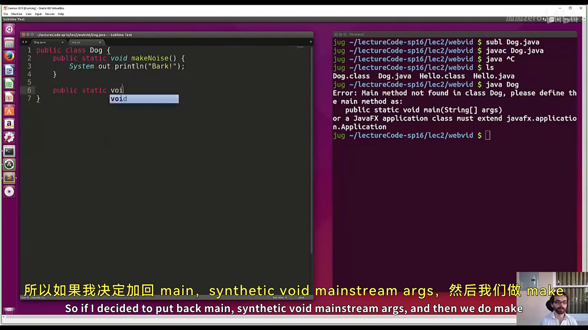
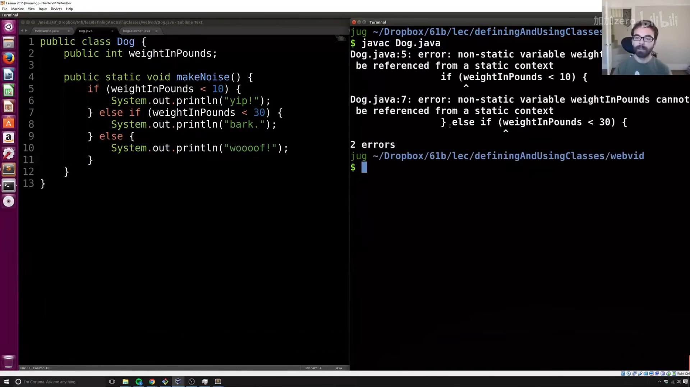
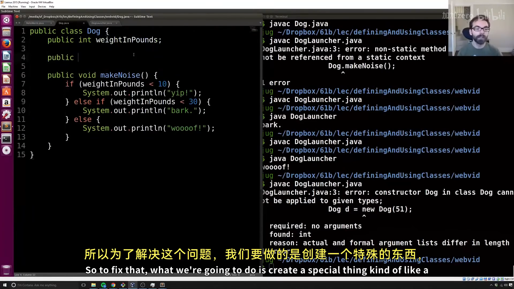
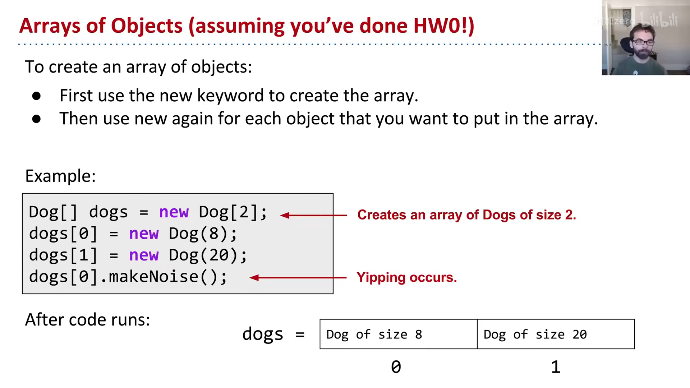
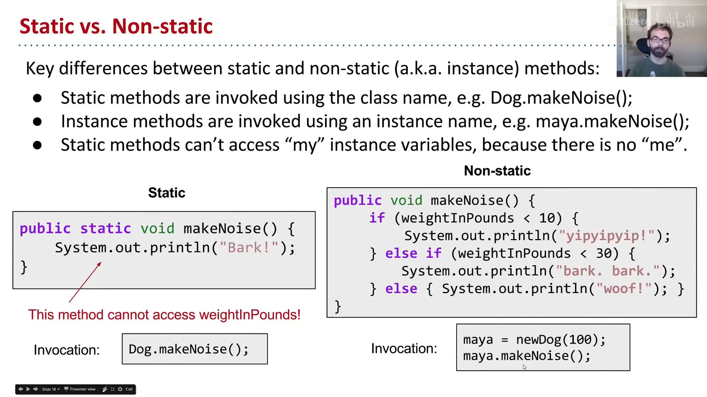
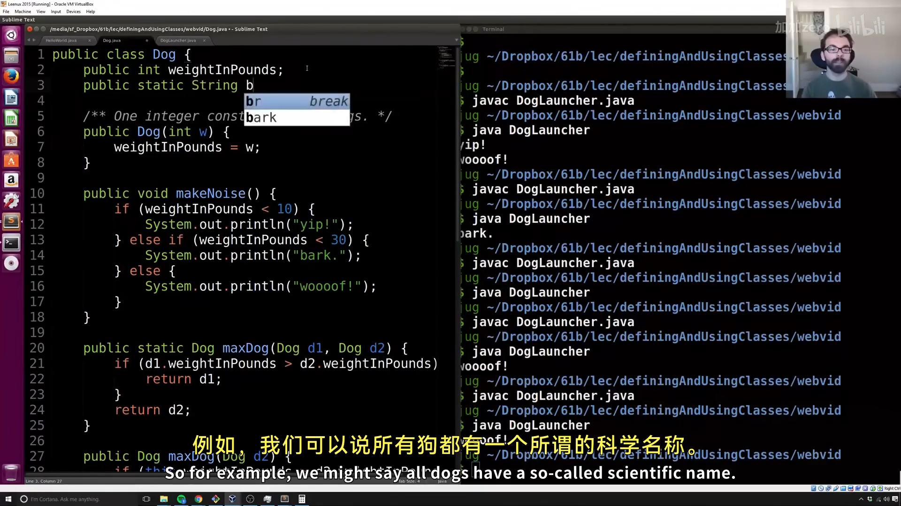
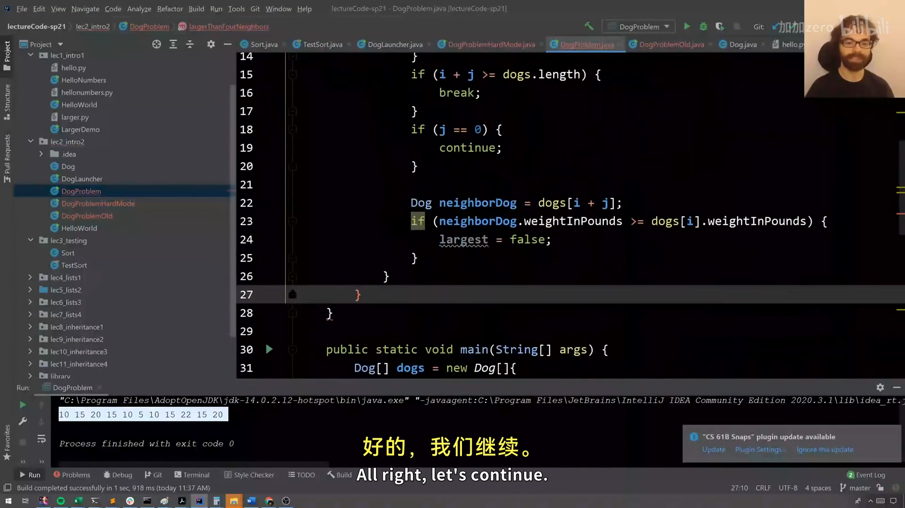

CS61B 第 2 讲：定义与使用类（Defining and Using Classes）
本电子书信息 - 来源视频：【数据结构与算法 CS61B 2021】伯克利大学—中英字幕 p1 2_Defining and Using Classes - 课程讲义：Hug61B · 1.2 Objects - 讲义版权：本课程全部材料由 Josh Hug（UC Berkeley CS61B）以 Creative Commons 4.0 BY-NC-SA 许可发布——可自由分享、演绎，但须署名 Josh Hug、以相同许可共享，且不得商用。 - 本书由课堂录像字幕重构而成，术语以官方讲义为准；示意图为官方讲义原图，演示截图取自原视频。
上一讲我们写了第一个 Java 程序。这一讲回答"类到底怎么用"：静态方法、实例变量、构造函数、对象数组、this，以及贯穿全课程的核心理念——用类与辅助方法管理复杂度。
一、静态方法 vs 非静态方法
Java 里所有代码都在类里。看这个 Dog 类：
public class Dog {
public static void makeNoise() {
System.out.println("Bark!");
}
}
直接 java Dog 会报错：Main method not found——因为我们只定义了 Dog 能做什么（叫），却还没让它运行。要运行它，可以给它加 main，或者另建一个"客户端"类：
public class DogLauncher {
public static void main(String[] args) {
Dog.makeNoise(); // 用类名调用静态方法
}
}
调用另一个类的类，叫做那个类的客户端（client）。两种做法（加 main vs 建客户端类）各有优劣，实践多了自然体会。

📷 Dog 类与静态方法
回到原视频 (00:06:28)
实例变量与对象实例化
不是所有狗都一样：有的爱尖叫，有的叫声洪亮。与其为每种狗建一个类（TinyDog、MalamuteDog），更自然的做法是实例化 Dog，让行为取决于具体那只狗的状态：
public class Dog {
public int weightInPounds;
public void makeNoise() { // 注意：没有 static
if (weightInPounds < 10) {
System.out.println("yipyipyip!");
} else if (weightInPounds < 30) {
System.out.println("bark. bark.");
} else {
System.out.println("woof!");
}
}
}
Dog d;
d = new Dog();
d.weightInPounds = 20;
d.makeNoise(); // 输出 "bark. bark."
关键术语：
- 对象（Object）：任何类的实例；
- 实例变量（instance variable / non-static variable）：属于对象自己的变量，必须在类内声明（不像 Python 可以运行时加）；
- 实例方法（instance method）：没加
static的方法，属于某个具体对象； - 调用实例方法要先
new出一个对象，再d.makeNoise()（而不是Dog.makeNoise()）； - 类的变量和方法统称成员（members），用点号访问。

📷 实例变量与实例化
回到原视频 (00:12:17)
二、构造函数（Constructor）
逐个手动给实例变量赋值很啰嗦，我们用构造函数：
public class Dog {
public int weightInPounds;
public Dog(int w) { // 构造函数：与类同名，无返回类型
weightInPounds = w;
}
public void makeNoise() { ... }
}
Dog d = new Dog(20); // 用 new + 单个 int 参数，自动调用 Dog(int w)
d.makeNoise();
构造函数 public Dog(int w) 会在 new Dog(20) 时被调用，相当于 Python 的 __init__。它的作用是告诉你如何构造一个对象的实例——通常要把实例变量都设置好。

📷 构造函数
回到原视频 (00:15:18)
三、对象数组
数组也能装对象，new 在这里有两种用法：一次创建"能装两个 Dog"的数组，再两次创建实际的 Dog：
Dog[] dogs = new Dog[2]; // 创建数组（两个空位，默认 null）
dogs[0] = new Dog(8); // 创建实际对象
dogs[1] = new Dog(20);
dogs[0].makeNoise(); // yip，因为体重 8

📷 对象数组
回到原视频 (00:20:41)
四、类方法 vs 实例方法（this）
Java 有两种方法：
- 类方法（静态方法）：由类本身调用，如
Math.sqrt(100)； - 实例方法（非静态方法）：由具体实例调用，如
d.makeNoise()。
比较两只狗，可以写成静态方法：
public static Dog maxDog(Dog d1, Dog d2) {
if (d1.weightInPounds > d2.weightInPounds) {
return d1;
}
return d2;
}
// 调用：Dog.maxDog(d, d2)
也可以写成实例方法，用 this 指代"当前对象"：
public Dog maxDog(Dog d2) {
if (this.weightInPounds > d2.weightInPounds) {
return this;
}
return d2;
}
// 调用：d.maxDog(d2)

📷 类方法 vs 实例方法
回到原视频 (00:22:11)
五、静态变量（Static Variables）
有时某个属性属于类本身而非实例——比如所有狗的学名都是 Canis familiaris：
public class Dog {
public int weightInPounds;
public static String binomen = "Canis familiaris";
}
访问静态变量要用类名（Dog.binomen），不要用实例名（d.binomen）——虽然后者 Java 技术上允许，但那是坏风格、易混淆（Josh 认为这是 Java 设计者的一个失误）。

📷 静态变量
回到原视频 (00:26:52)
六、为什么 Java 强迫你用类：管理复杂度
为什么要 static、为什么要类、为什么不能把代码写在类外面？答案是：它剥夺了你作为程序员的一部分选择，从而减少复杂度。
- 强迫代码属于类 → 你不能写"散装"代码；
static方法被限制 → 它不能访问实例变量，于是你少了一件要担心的事；- 选择越少 → 要思考的东西越少 → 代码越好懂。
管理复杂度是 61B 设计的根本原则。static 的本质就是"限制可能发生的事情"，让代码更易理解。
七、辅助方法（Helper Methods）
面对复杂问题时，最重要的工具是辅助方法：一个只做一件简单小事的方法。它让你把大问题拆成小问题，逐个击破。
Josh 用一个例子演示：写一个方法 largerThanFourNeighbors，给定一个 Dog 数组，返回所有"比左右各两个邻居都大"的狗。
不拆分的写法：一堆嵌套循环 + if 判断边界 + j==0 跳过自己，代码又长又容易出 bug（Josh 现场就写出了一堆特殊情况，越写越乱）。
用辅助方法：把逻辑拆成几个有名字的小函数，主函数读起来像自然语言：
public static Dog[] largerThanFourNeighbors(Dog[] dogs) {
Dog[] returnDogs = new Dog[dogs.length];
int cnt = 0;
for (int i = 0; i < dogs.length; i++) {
if (isBiggestOfFour(dogs, i)) { // 辅助方法：这只狗是四邻最大吗？
returnDogs[cnt] = dogs[i];
cnt += 1;
}
}
return arrayWithNoNulls(returnDogs, cnt); // 辅助方法：去掉多余的空位
}
isBiggestOfFour 里再配合 isValidIndex 判断索引是否越界、跳过 j==0 避免"和自己比较"。每一步都清晰、可读、可单独测试。

📷 用辅助方法重构
回到原视频 (00:45:00)
辅助方法的三重好处：
- 更具叙述性——代码读起来像在描述意图；
- 写的时候更不容易出错——每个小函数只负责一件事；
- 出错时更容易调试——bug 被局限在某个小函数里，一眼就能定位。
八、public static void main(String[] args) 拆解
终于可以拆解那个一直出现的 main 声明了：
public：可见性（目前所有方法都以此开头）；static：静态方法，不关联任何具体实例；void：没有返回值；main：方法名；String[] args：传给 main 的参数。
命令行参数
main 由 Java 解释器调用，args 就是命令行参数。例如：
public class ArgsDemo {
public static void main(String[] args) {
System.out.println(args[0]); // 打印第 0 个命令行参数
}
}
$ java ArgsDemo these are command line arguments
these
args 是一个字符串数组 {"these", "are", "command", "line", "arguments"}。
附：官方参考与延伸阅读
- 本讲讲义（1.2 Objects）：https://joshhug.gitbooks.io/hug61b/content/chap1/chap12.html
- DogLauncher 视频：https://www.youtube.com/watch?v=Q-LE-jJQLTM
- 练习 1.2.2 视频：https://youtu.be/8Gq-8mVbyFU（解答：https://youtu.be/Osuy8UEH03M）
- HW0（建议先做）：http://sp19.datastructur.es/materials/hw/hw0/hw0.html
- Project 0：http://sp19.datastructur.es/materials/proj/proj0/proj0
版权与许可：本电子书中的课堂讲解内容重构自 Josh Hug（UC Berkeley）CS61B 课程录像；课程全部材料依据 Creative Commons 4.0 BY-NC-SA 许可发布。请在使用时署名 Josh Hug、以相同许可共享，且不得用于商业用途。书中示意图来自官方讲义原图，演示截图来自原视频，相应权利归原作者与视频权利人所有。